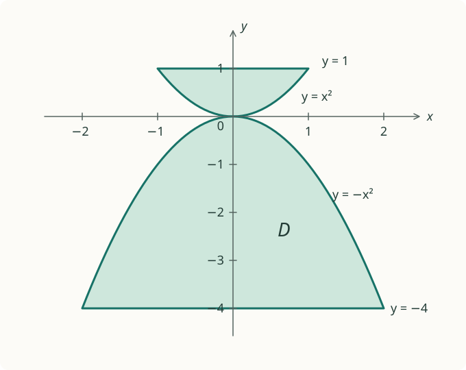

Practice · Lesson 08
Random Variables · Part 3
Exercises
Work through the questions independently. Each solution starts closed; open it when you are ready for the reasoning and calculations.
Questions and solutions
An iterated integral over a rectangle
Compute
$$\int_0^2\int_0^1xy^2\,dy\,dx.$$
Show solutionHide solution: An iterated integral over a rectangle
Read the order before calculating
The inner differential is $dy$, so integrate $y$ first. Hold $x$ fixed and use the power rule:
$$ \int_0^1xy^2\,dy =x\left[\frac{y^3}{3}\right]_0^1 =\frac x3. $$
Now integrate over the outer range:
$$ \int_0^2\frac x3\,dx =\left[\frac{x^2}{6}\right]_0^2 =\boxed{\frac23}. $$
The full calculation is therefore
$$ \boxed{\int_0^2\int_0^1xy^2\,dy\,dx=\frac23.} $$
Check by reversing the order
Describe the same rectangle with $x$ as the inner variable:
$$ \begin{aligned} \int_0^1\int_0^2xy^2\,dx\,dy &=\int_0^1\left[\frac{x^2y^2}{2}\right]_0^2dy\\ &=\int_0^1 2y^2\,dy =\frac23. \end{aligned} $$
The two orders agree.
Check by separating the factors
Because the region is a rectangle and the integrand factors,
$$ \left(\int_0^2x\,dx\right) \left(\int_0^1y^2\,dy\right) =2\cdot\frac13=\frac23. $$
This is the same repeated integration written compactly.
Return to the explanation: Slide 9. Original PDF ↗
Integrals over triangular and parabolic regions
(a) A triangular region
Evaluate the integral of $f(x,y)=2-3x+xy$ over the triangle with vertices $(0,0)$, $(1,0)$, and $(1,3)$.
(b) Two parabolic regions
Evaluate
$$\iint_D(3-6xy)\,dx\,dy,$$
where $D$ is the union of the two shaded pieces described in the source figure:
- The upper piece is between the parabola $y=x^2$ and the horizontal line $y=1$, with endpoints $(-1,1)$ and $(1,1)$.
- The lower piece is between the horizontal line $y=-4$ and the parabola $y=-x^2$, with endpoints $(-2,-4)$ and $(2,-4)$.
The pieces meet at the origin.

Show solutionHide solution: Integrals over triangular and parabolic regions
Part (a): find the sloping boundary
The line joining $(0,0)$ to $(1,3)$ is $y=3x$. The triangle is therefore
$$ 0\le x\le1,\qquad 0\le y\le3x. $$
For example, the vertical slice at $x=1/2$ runs from $y=0$ to $y=3/2$. Thus
$$ I_a=\int_0^1\int_0^{3x}(2-3x+xy)\,dy\,dx. $$
Integrate $y$ while holding $x$ fixed:
$$ \left[(2-3x)y+\frac{xy^2}{2}\right]_0^{3x} =6x-9x^2+\frac92x^3. $$
Then
$$ \begin{aligned} I_a &=\left[3x^2-3x^3+\frac98x^4\right]_0^1\\ &=3-3+\frac98=\boxed{\frac98}. \end{aligned} $$
The integrand can be negative near $(1,0)$, so this is a signed integral, not the volume of a nonnegative density.
Part (b): read both shaded pieces
The upper piece lies between $y=x^2$ and $y=1$ for $-1\le x\le1$. The lower piece lies between $y=-4$ and $y=-x^2$ for $-2\le x\le2$. Therefore
$$ I_b= \int_{-1}^{1}\int_{x^2}^{1}(3-6xy)\,dy\,dx + \int_{-2}^{2}\int_{-4}^{-x^2}(3-6xy)\,dy\,dx. $$
The two pieces touch only at the origin, which has zero area.
Use symmetry before expanding
Both shaded pieces are symmetric under $x\mapsto-x$. At mirrored points,
$$ (-6xy)+(-6(-x)y)=0. $$
The contributions from $-6xy$ therefore cancel in pairs. Only the constant 3 remains:
$$ I_b=3\,\operatorname{Area}(D). $$
The upper area is
$$ \int_{-1}^1(1-x^2)\,dx =2\left[ x-\frac{x^3}{3}\right]_0^1 =\frac43. $$
The lower area is
$$ \int_{-2}^2(4-x^2)\,dx =2\left[4x-\frac{x^3}{3}\right]_0^2 =\frac{32}{3}. $$
Hence
$$ \boxed{I_b=3\left(\frac43+\frac{32}{3}\right)=36.} $$
Why the cancellation is justified
Symmetry here is a precise pairing rule: every point $(x,y)$ in the region has a matching point $(-x,y)$ with the same small area and opposite value of the odd term. The constant term has the same value at both points and adds instead of cancelling.
Return to the explanation: Slide 18. Original PDF ↗
Two chords in a circle
Suppose you choose two chords at random on a circle. What is the probability that they intersect inside the circle?
Model clarification: The source does not specify how a random chord is chosen. For this exercise, choose each chord by selecting its two endpoints independently and uniformly around the circumference. Make all four endpoint choices independently.
Show solutionHide solution: Two chords in a circle
Fix the first chord and examine its arcs
The first chord divides the circumference into two arcs. Let one arc occupy fraction $t$ of the circumference; the other occupies fraction $1-t$.
The second chord crosses the first exactly when its endpoints fall on opposite arcs. There are two disjoint ways:
- First endpoint on the first arc, second on the other: probability $t(1-t)$.
- First endpoint on the other arc, second on the first: probability $(1-t)t$.
Thus
$$ P(\text{cross}\mid t)=2t(1-t). $$
Coincident endpoints and boundary coincidences have probability zero in this model.
Average over the first chord
Fix its first endpoint by rotational symmetry. Its second endpoint is uniform around the circumference, so the clockwise arc fraction $T$ is uniform on $(0,1)$. Consequently,
$$ \begin{aligned} P(\text{cross}) &=\int_0^1 2t(1-t)\,dt\\ &=\left[t^2-\frac23t^3\right]_0^1\\ &=\boxed{\frac13}. \end{aligned} $$
A counting explanation for the same answer
Four distinct uniform endpoints appear around the circle. For any four locations, there are three ways to divide them into two unordered pairs. Label the cyclic positions 1, 2, 3, 4. The pairings are
$$ (1,2),(3,4);\qquad (1,3),(2,4);\qquad (1,4),(2,3). $$
Only the middle pairing alternates endpoints and therefore crosses. Because the original endpoint labels are exchangeable, each pairing is equally likely. One of the three pairings crosses, giving $1/3$.
What symmetry justified
Symmetry did not replace counting. It justified the equal-probability denominator: relabeling the independently uniform endpoints cannot favour one pairing over another. Once that equality is established, favorable cases divided by total cases is valid.
Return to the explanation: Slide 29. Original PDF ↗